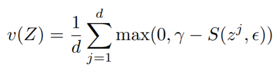

Losses¶
All loss functions are used as follows:
from pytorch_metric_learning import losses
loss_func = losses.SomeLoss()
loss = loss_func(embeddings, labels) # in your training for-loop
Or if you are using a loss in conjunction with a miner:
from pytorch_metric_learning import miners
miner_func = miners.SomeMiner()
loss_func = losses.SomeLoss()
miner_output = miner_func(embeddings, labels) # in your training for-loop
loss = loss_func(embeddings, labels, miner_output)
For some losses, you don't need to pass in labels if you are already passing in pair/triplet indices:
loss = loss_func(embeddings, indices_tuple=pairs)
# it also works with ref_emb
loss = loss_func(embeddings, indices_tuple=pairs, ref_emb=ref_emb)
Losses for which you can pass in indices_tuple without labels
- CircleLoss
- ContrastiveLoss
- IntraPairVarianceLoss
- GeneralizedLiftedStructureLoss
- LiftedStructureLoss
- MarginLoss
- MultiSimilarityLoss
- NTXentLoss
- SignalToNoiseRatioContrastiveLoss
- SupConLoss
- TripletMarginLoss
- TupletMarginLoss
You can specify how losses get reduced to a single value by using a reducer:
from pytorch_metric_learning import reducers
reducer = reducers.SomeReducer()
loss_func = losses.SomeLoss(reducer=reducer)
loss = loss_func(embeddings, labels) # in your training for-loop
For tuple losses, you can separate the source of anchors and positives/negatives:
loss_func = losses.SomeLoss()
# anchors will come from embeddings
# positives/negatives will come from ref_emb
loss = loss_func(embeddings, labels, ref_emb=ref_emb, ref_labels=ref_labels)
For classification losses, you can get logits using the get_logits function:
loss_func = losses.SomeClassificationLoss()
logits = loss_func.get_logits(embeddings)
AngularLoss¶
Deep Metric Learning with Angular Loss
losses.AngularLoss(alpha=40, **kwargs)

Parameters:
- alpha: The angle specified in degrees. The paper uses values between 36 and 55.
Default distance:
-
LpDistance(p=2, power=1, normalize_embeddings=True)- This is the only compatible distance.
Default reducer:
Reducer input:
- loss: The loss for every
a1, where(a1,p)represents every positive pair in the batch. Reduction type is"element".
ArcFaceLoss¶
ArcFace: Additive Angular Margin Loss for Deep Face Recognition
losses.ArcFaceLoss(num_classes, embedding_size, margin=28.6, scale=64, **kwargs)
Equation:

Parameters:
- num_classes: The number of classes in your training dataset.
- embedding_size: The size of the embeddings that you pass into the loss function. For example, if your batch size is 128 and your network outputs 512 dimensional embeddings, then set
embedding_sizeto 512. - margin: The angular margin penalty in degrees. In the above equation,
m = radians(margin). The paper uses 0.5 radians, which is 28.6 degrees. - scale: This is
sin the above equation. The paper uses 64.
Other info:
- This also extends WeightRegularizerMixin, so it accepts
weight_regularizer,weight_reg_weight, andweight_init_funcas optional arguments. - This loss requires an optimizer. You need to create an optimizer and pass this loss's parameters to that optimizer. For example:
loss_func = losses.ArcFaceLoss(...).to(torch.device('cuda')) loss_optimizer = torch.optim.SGD(loss_func.parameters(), lr=0.01) # then during training: loss_optimizer.step()
Default distance:
CosineSimilarity()- This is the only compatible distance.
Default reducer:
Reducer input:
- loss: The loss per element in the batch. Reduction type is
"element".
BaseMetricLossFunction¶
All loss functions extend this class and therefore inherit its __init__ parameters.
losses.BaseMetricLossFunction(collect_stats = False,
reducer = None,
distance = None,
embedding_regularizer = None,
embedding_reg_weight = 1)
Parameters:
- collect_stats: If True, will collect various statistics that may be useful to analyze during experiments. If False, these computations will be skipped. Want to make
Truethe default? Set the global COLLECT_STATS flag. - reducer: A reducer object. If None, then the default reducer will be used.
- distance: A distance object. If None, then the default distance will be used.
- embedding_regularizer: A regularizer object that will be applied to embeddings. If None, then no embedding regularization will be used.
- embedding_reg_weight: If an embedding regularizer is used, then its loss will be multiplied by this amount before being added to the total loss.
Default distance:
Default reducer:
Reducer input:
- embedding_reg_loss: Only exists if an embedding regularizer is used. It contains the loss per element in the batch. Reduction type is
"already_reduced".
Required Implementations:
def compute_loss(self, embeddings, labels, indices_tuple, ref_emb, ref_labels):
raise NotImplementedError
CircleLoss¶
Circle Loss: A Unified Perspective of Pair Similarity Optimization
losses.CircleLoss(m=0.4, gamma=80, **kwargs)
Equations:

where


Parameters:
- m: The relaxation factor that controls the radius of the decision boundary. The paper uses 0.25 for face recognition, and 0.4 for fine-grained image retrieval (images of birds, cars, and online products).
- gamma: The scale factor that determines the largest scale of each similarity score. The paper uses 256 for face recognition, and 80 for fine-grained image retrieval.
Default distance:
-
- This is the only compatible distance.
Default reducer:
Reducer input:
- loss: The loss per element in the batch. Reduction type is
"element".
ContrastiveLoss¶
losses.ContrastiveLoss(pos_margin=0, neg_margin=1, **kwargs):
Equation:
If using a distance metric like LpDistance, the loss is:

If using a similarity metric like CosineSimilarity, the loss is:
Parameters:
- pos_margin: The distance (or similarity) over (under) which positive pairs will contribute to the loss.
- neg_margin: The distance (or similarity) under (over) which negative pairs will contribute to the loss.
Note that the default values for pos_margin and neg_margin are suitable if you are using a non-inverted distance measure, like LpDistance. If you use an inverted distance measure like CosineSimilarity, then more appropriate values would be pos_margin = 1 and neg_margin = 0.
Default distance:
Default reducer:
Reducer input:
- pos_loss: The loss per positive pair in the batch. Reduction type is
"pos_pair". - neg_loss: The loss per negative pair in the batch. Reduction type is
"neg_pair".
CosFaceLoss¶
CosFace: Large Margin Cosine Loss for Deep Face Recognition
losses.CosFaceLoss(num_classes, embedding_size, margin=0.35, scale=64, **kwargs)
Equation:

Parameters:
- num_classes: The number of classes in your training dataset.
- embedding_size: The size of the embeddings that you pass into the loss function. For example, if your batch size is 128 and your network outputs 512 dimensional embeddings, then set
embedding_sizeto 512. - margin: The cosine margin penalty (m in the above equation). The paper used values between 0.25 and 0.45.
- scale: This is
sin the above equation. The paper uses 64.
Other info:
- This also extends WeightRegularizerMixin, so it accepts
weight_regularizer,weight_reg_weight, andweight_init_funcas optional arguments. - This loss requires an optimizer. You need to create an optimizer and pass this loss's parameters to that optimizer. For example:
loss_func = losses.CosFaceLoss(...).to(torch.device('cuda')) loss_optimizer = torch.optim.SGD(loss_func.parameters(), lr=0.01) # then during training: loss_optimizer.step()
Default distance:
-
- This is the only compatible distance.
Default reducer:
Reducer input:
- loss: The loss per element in the batch. Reduction type is
"element".
CrossBatchMemory¶
This wraps a loss function, and implements Cross-Batch Memory for Embedding Learning. It stores embeddings from previous iterations in a queue, and uses them to form more pairs/triplets with the current iteration's embeddings.
losses.CrossBatchMemory(loss, embedding_size, memory_size=1024, miner=None)
Parameters:
- loss: The loss function to be wrapped. For example, you could pass in
ContrastiveLoss(). - embedding_size: The size of the embeddings that you pass into the loss function. For example, if your batch size is 128 and your network outputs 512 dimensional embeddings, then set
embedding_sizeto 512. - memory_size: The size of the memory queue.
- miner: An optional tuple miner, which will be used to mine pairs/triplets from the memory queue.
Forward function
loss_fn(embeddings, labels, indices_tuple=None, enqueue_mask=None)
As shown above, CrossBatchMemory comes with a 4th argument in its forward function:
- enqueue_mask: A boolean tensor where
enqueue_mask[i]is True ifembeddings[i]should be added to the memory queue. This enables CrossBatchMemory to be used in self-supervision frameworks like MoCo. Check out the MoCo on CIFAR100 notebook to see how this works.
Supported Loss Functions
Reset queue
The queue can be cleared like this:
loss_fn.reset_queue()
DynamicSoftMarginLoss¶
Learning Local Descriptors With a CDF-Based Dynamic Soft Margin
losses.DynamicSoftMarginLoss(min_val=-2.0, num_bins=10, momentum=0.01, **kwargs)
Parameters:
- min_val: minimum significative value for
d_pos - d_neg - num_bins: number of equally spaced bins for the partition of the interval
[min_val, ] - momentum: weight assigned to the histogram computed from the current batch
FastAPLoss¶
losses.FastAPLoss(num_bins=10, **kwargs)
Parameters:
- num_bins: The number of soft histogram bins for calculating average precision. The paper suggests using 10.
Default distance:
LpDistance(normalize_embeddings=True, p=2, power=2)- The only compatible distance is
LpDistance(normalize_embeddings=True, p=2). However, thepowervalue can be changed.
- The only compatible distance is
Default reducer:
Reducer input:
- loss: The loss per element that has at least 1 positive in the batch. Reduction type is
"element".
GenericPairLoss¶
losses.GenericPairLoss(mat_based_loss, **kwargs)
- mat_based_loss: See required implementations.
Required Implementations:
# If mat_based_loss is True, then this takes in mat, pos_mask, neg_mask
# If False, this takes in pos_pair, neg_pair, indices_tuple
def _compute_loss(self):
raise NotImplementedError
GeneralizedLiftedStructureLoss¶
This was presented in In Defense of the Triplet Loss for Person Re-Identification. It is a modification of the original LiftedStructureLoss
losses.GeneralizedLiftedStructureLoss(neg_margin=1, pos_margin=0, **kwargs)

Parameters:
- pos_margin: The margin in the expression
e^(D - margin). The paper usespos_margin = 0, which is why this margin does not appear in the above equation. - neg_margin: This is
min the above equation. The paper used values between 0.1 and 1.
Default distance:
Default reducer:
Reducer input:
- loss: The loss per element in the batch. Reduction type is
"element".
InstanceLoss¶
Dual-Path Convolutional Image-Text Embeddings with Instance Loss
losses.InstanceLoss(gamma=64, **kwargs)
Parameters:
- gamma: The cosine similarity matrix is scaled by this amount.
HistogramLoss¶
Learning Deep Embeddings with Histogram Loss
losses.HistogramLoss(n_bins=None, delta=None)
Parameters:
- n_bins: The number of bins used to construct the histogram. Default is 100 when both
n_binsanddeltaareNone. - delta: The mesh of the uniform partition of the interval [-1, 1] used to construct the histogram. If not set the value of n_bins will be used.
Default distance:
Default reducer:
- This loss returns an already reduced loss.
IntraPairVarianceLoss¶
Deep Metric Learning with Tuplet Margin Loss
losses.IntraPairVarianceLoss(pos_eps=0.01, neg_eps=0.01, **kwargs)
Equations:

Parameters:
- pos_eps: The epsilon in the Lpos equation. The paper uses 0.01.
- neg_eps: The epsilon in the Lneg equation. The paper uses 0.01.
You should probably use this in conjunction with another loss, as described in the paper. You can accomplish this by using MultipleLosses:
main_loss = losses.TupletMarginLoss()
var_loss = losses.IntraPairVarianceLoss()
complete_loss = losses.MultipleLosses([main_loss, var_loss], weights=[1, 0.5])
Default distance:
Default reducer:
Reducer input:
- pos_loss: The loss per positive pair in the batch. Reduction type is
"pos_pair". - neg_loss: The loss per negative pair in the batch. Reduction type is
"neg_pair".
LargeMarginSoftmaxLoss¶
Large-Margin Softmax Loss for Convolutional Neural Networks
losses.LargeMarginSoftmaxLoss(num_classes,
embedding_size,
margin=4,
scale=1,
**kwargs)
Equations:

where
Parameters:
- num_classes: The number of classes in your training dataset.
- embedding_size: The size of the embeddings that you pass into the loss function. For example, if your batch size is 128 and your network outputs 512 dimensional embeddings, then set
embedding_sizeto 512. - margin: An integer which dictates the size of the angular margin. This is
min the above equation. The paper findsm=4works best. - scale: The exponent multiplier in the loss's softmax expression. The paper uses
scale = 1, which is why it does not appear in the above equation.
Other info:
- This also extends WeightRegularizerMixin, so it accepts
weight_regularizer,weight_reg_weight, andweight_init_funcas optional arguments. - This loss requires an optimizer. You need to create an optimizer and pass this loss's parameters to that optimizer. For example:
loss_func = losses.LargeMarginSoftmaxLoss(...).to(torch.device('cuda')) loss_optimizer = torch.optim.SGD(loss_func.parameters(), lr=0.01) # then during training: loss_optimizer.step()
Default distance:
-
- This is the only compatible distance.
Default reducer:
Reducer input:
- loss: The loss per element in the batch. Reduction type is
"element".
LiftedStructureLoss¶
The original lifted structure loss as presented in Deep Metric Learning via Lifted Structured Feature Embedding
losses.LiftedStructureLoss(neg_margin=1, pos_margin=0, **kwargs):
Equation:
Parameters:
- pos_margin: The margin in the expression
D_(i,j) - margin. The paper usespos_margin = 0, which is why it does not appear in the above equation. - neg_margin: This is
alphain the above equation. The paper uses 1.
Default distance:
Default reducer:
Reducer input:
- loss: The loss per positive pair in the batch. Reduction type is
"pos_pair".
ManifoldLoss¶
Ensemble Deep Manifold Similarity Learning using Hard Proxies
losses.ManifoldLoss(
l: int,
K: int = 50,
lambdaC: float = 1.0,
alpha: float = 0.8,
margin: float = 5e-4,
**kwargs
)
Parameters
-
l: embedding size.
-
K: number of proxies.
-
lambdaC: regularization weight. Used in the formula
loss = intrinsic_loss + lambdaC*context_loss. IflambdaC=0, then it uses only the intrinsic loss. IflambdaC=np.inf, then it uses only the context loss. -
alpha: parameter of the Random Walk. Must be in the range
(0,1). It specifies the amount of similarity between neighboring nodes. -
margin: margin used in the calculation of the loss.
Example usage:
loss_fn = ManifoldLoss(128)
# use random cluster centers
loss = loss_fn(embeddings)
# or specify indices of embeddings to use as cluster centers
loss = loss_fn(embeddings, indices_tuple=indices)
Important notes
labels, ref_emb, and ref_labels are not supported for this loss function.
In addition, indices_tuple is not for the output of miners. Instead, it is for a list of indices of embeddings to be used as cluster centers.
Default reducer:
- This loss returns an already reduced loss.
MarginLoss¶
Sampling Matters in Deep Embedding Learning
losses.MarginLoss(margin=0.2,
nu=0,
beta=1.2,
triplets_per_anchor="all",
learn_beta=False,
num_classes=None,
**kwargs)
Equations:

where

Parameters:
- margin: This is alpha in the above equation. The paper uses 0.2.
- nu: The regularization weight for the magnitude of beta.
- beta: This is beta in the above equation. The paper uses 1.2 as the initial value.
- triplets_per_anchor: The number of triplets per element to sample within a batch. Can be an integer or the string "all". For example, if your batch size is 128, and triplets_per_anchor is 100, then 12800 triplets will be sampled. If triplets_per_anchor is "all", then all possible triplets in the batch will be used.
- learn_beta: If True, beta will be a torch.nn.Parameter, which can be optimized using any PyTorch optimizer.
- num_classes: If not None, then beta will be of size
num_classes, so that a separate beta is used for each class during training.
Default distance:
Default reducer:
Reducer input:
- margin_loss: The loss per triplet in the batch. Reduction type is
"triplet". - beta_reg_loss: The regularization loss per element in
self.beta. Reduction type is"already_reduced"ifself.num_classes = None. Otherwise it is"element".
MultiSimilarityLoss¶
Multi-Similarity Loss with General Pair Weighting for Deep Metric Learning
losses.MultiSimilarityLoss(alpha=2, beta=50, base=0.5, **kwargs)
Equation:

Parameters:
- alpha: The weight applied to positive pairs. The paper uses 2.
- beta: The weight applied to negative pairs. The paper uses 50.
- base: The offset applied to the exponent in the loss. This is lambda in the above equation. The paper uses 1.
Default distance:
Default reducer:
Reducer input:
- loss: The loss per element in the batch. Reduction type is
"element".
MultipleLosses¶
This is a simple wrapper for multiple losses. Pass in a list of already-initialized loss functions. Then, when you call forward on this object, it will return the sum of all wrapped losses.
losses.MultipleLosses(losses, miners=None, weights=None)
- losses: A list or dictionary of initialized loss functions. On the forward call of MultipleLosses, each wrapped loss will be computed, and then the average will be returned.
- miners: Optional. A list or dictionary of mining functions. This allows you to pair mining functions with loss functions. For example, if
losses = [loss_A, loss_B], andminers = [None, miner_B]then no mining will be done forloss_A, but the output ofminer_Bwill be passed toloss_B. The same logic applies iflosses = {"loss_A": loss_A, "loss_B": loss_B}andminers = {"loss_B": miner_B}. - weights: Optional. A list or dictionary of loss weights, which will be multiplied by the corresponding losses obtained by the loss functions. The default is to multiply each loss by 1. If
lossesis a list, thenweightsmust be a list. Iflossesis a dictionary,weightsmust contain the same keys aslosses.
NCALoss¶
Neighbourhood Components Analysis
losses.NCALoss(softmax_scale=1, **kwargs)
Equations:
where
In this implementation, we use -g(A) as the loss.
Parameters:
- softmax_scale: The exponent multiplier in the loss's softmax expression. The paper uses
softmax_scale = 1, which is why it does not appear in the above equations.
Default distance:
Default reducer:
Reducer input:
- loss: The loss per element in the batch, that results in a non zero exponent in the cross entropy expression. Reduction type is
"element".
NormalizedSoftmaxLoss¶
Classification is a Strong Baseline for Deep Metric Learning
losses.NormalizedSoftmaxLoss(num_classes, embedding_size, temperature=0.05, **kwargs)
Equation:

Parameters:
- num_classes: The number of classes in your training dataset.
- embedding_size: The size of the embeddings that you pass into the loss function. For example, if your batch size is 128 and your network outputs 512 dimensional embeddings, then set
embedding_sizeto 512. - temperature: This is sigma in the above equation. The paper uses 0.05.
Other info
- This also extends WeightRegularizerMixin, so it accepts
weight_regularizer,weight_reg_weight, andweight_init_funcas optional arguments. - This loss requires an optimizer. You need to create an optimizer and pass this loss's parameters to that optimizer. For example:
loss_func = losses.NormalizedSoftmaxLoss(...).to(torch.device('cuda')) loss_optimizer = torch.optim.SGD(loss_func.parameters(), lr=0.01) # then during training: loss_optimizer.step()
Default distance:
Default reducer:
Reducer input:
- loss: The loss per element in the batch. Reduction type is
"element".
NPairsLoss¶
Improved Deep Metric Learning with Multi-class N-pair Loss Objective
If your batch has more than 2 samples per label, then you should use NTXentLoss.
losses.NPairsLoss(**kwargs)
Default distance:
Default reducer:
Reducer input:
- loss: The loss per element in the batch. Reduction type is
"element".
NTXentLoss¶
This is also known as InfoNCE, and is a generalization of the NPairsLoss. It has been used in self-supervision papers such as:
- Representation Learning with Contrastive Predictive Coding
- Momentum Contrast for Unsupervised Visual Representation Learning
- A Simple Framework for Contrastive Learning of Visual Representations
How exactly is the NTXentLoss computed?
In the equation below, a loss is computed for each positive pair (k_+) in a batch, normalized by itself and all negative pairs in the batch that have the same "anchor" embedding (k_i in K).
- What does "anchor" mean? Let's say we have 3 pairs specified by batch indices: (0, 1), (0, 2), (1, 0). The first two pairs start with 0, so they have the same anchor. The third pair has the same indices as the first pair, but the order is different, so it does not have the same anchor.
Given embeddings with corresponding labels, positive pairs (embeddings[i], embeddings[j]) are defined when labels[i] == labels[j]. Now let's look at an example loss calculation:
Consider labels = [0, 0, 1, 2]. Two losses will be computed:
-
A positive pair of indices
[0, 1], with negative pairs of indices[0, 2], [0, 3]. -
A positive pair of indices
[1, 0], with negative pairs of indices[1, 2], [1, 3].
Labels 1, and 2 do not have positive pairs, and therefore the negative pair of indices [2, 3] will not be used.
Note that an anchor can belong to multiple positive pairs if its label is present multiple times in labels.
Are you trying to use NTXentLoss for self-supervised learning? Specifically, do you have two sets of embeddings which are derived from data that are augmented versions of each other? If so, you can skip the step of creating the labels array, by wrapping NTXentLoss with SelfSupervisedLoss.
losses.NTXentLoss(temperature=0.07, **kwargs)
Equation:

Parameters:
- temperature: This is tau in the above equation. The MoCo paper uses 0.07, while SimCLR uses 0.5.
Default distance:
Default reducer:
Reducer input:
- loss: The loss per positive pair in the batch. Reduction type is
"pos_pair".
P2SGradLoss¶
P2SGrad: Refined Gradients for Optimizing Deep Face Models
losses.P2SGradLoss(descriptors_dim, num_classes, **kwargs)
Parameters
-
descriptors_dim: The embedding size.
-
num_classes: The number of classes in your training dataset.
Example usage:
loss_fn = P2SGradLoss(128, 10)
loss = loss_fn(embeddings, labels)
Important notes
indices_tuple, ref_emb, and ref_labels are not supported for this loss function.
Default reducer:
- This loss returns an already reduced loss.
PNPLoss¶
losses.PNPLoss(b=2, alpha=1, anneal=0.01, variant="O", **kwargs)
Parameters:
- b: The boundary of PNP-Ib (see equation 9 above). The paper uses 2.
- alpha: The power of PNP-Dq (see equation 13 above). The paper uses 8.
- anneal: The temperature of the sigmoid function. (The sigmoid function is used for
Rin the equations above.) The paper uses 0.01. - variant: The name of the variant. The options are {"Ds", "Dq", "Iu", "Ib", "O"}. The paper uses "Dq".
Default distance:
CosineSimilarity()- This is the only compatible distance.
Default reducer:
Reducer input:
- loss: The loss per element that has at least 1 positive in the batch. Reduction type is
"element".
ProxyAnchorLoss¶
Proxy Anchor Loss for Deep Metric Learning
losses.ProxyAnchorLoss(num_classes, embedding_size, margin = 0.1, alpha = 32, **kwargs)
Equation:

Parameters:
- num_classes: The number of classes in your training dataset.
- embedding_size: The size of the embeddings that you pass into the loss function. For example, if your batch size is 128 and your network outputs 512 dimensional embeddings, then set
embedding_sizeto 512. - margin: This is delta in the above equation. The paper uses 0.1.
- alpha: This is alpha in the above equation. The paper uses 32.
Other info
- This also extends WeightRegularizerMixin, so it accepts
weight_regularizer,weight_reg_weight, andweight_init_funcas optional arguments. - This loss requires an optimizer. You need to create an optimizer and pass this loss's parameters to that optimizer. For example:
loss_func = losses.ProxyAnchorLoss(...).to(torch.device('cuda')) loss_optimizer = torch.optim.SGD(loss_func.parameters(), lr=0.01) # then during training: loss_optimizer.step()
Default distance:
Default reducer:
Reducer input:
- pos_loss: The positive pair loss per proxy. Reduction type is
"element". - neg_loss: The negative pair loss per proxy. Reduction type is
"element".
ProxyNCALoss¶
No Fuss Distance Metric Learning using Proxies
losses.ProxyNCALoss(num_classes, embedding_size, softmax_scale=1, **kwargs)
Parameters:
- num_classes: The number of classes in your training dataset.
- embedding_size: The size of the embeddings that you pass into the loss function. For example, if your batch size is 128 and your network outputs 512 dimensional embeddings, then set
embedding_sizeto 512. - softmax_scale: See NCALoss
Other info
- This also extends WeightRegularizerMixin, so it accepts
weight_regularizer,weight_reg_weight, andweight_init_funcas optional arguments. - This loss requires an optimizer. You need to create an optimizer and pass this loss's parameters to that optimizer. For example:
loss_func = losses.ProxyNCALoss(...).to(torch.device('cuda')) loss_optimizer = torch.optim.SGD(loss_func.parameters(), lr=0.01) # then during training: loss_optimizer.step()
Default distance:
Default reducer:
Reducer input:
- loss: The loss per element in the batch, that results in a non zero exponent in the cross entropy expression. Reduction type is
"element".
RankedListLoss¶
Ranked List Loss for Deep Metric Learning
losses.RankedListLoss(margin, Tn, imbalance=0.5, alpha=None, Tp=0, **kwargs)
Parameters:
- margin (float): margin between positive and negative set
- imbalance (float): tradeoff between positive and negative sets. As the name suggests this takes into account the imbalance between positive and negative samples in the dataset
- alpha (float): smallest distance between negative points
- Tp & Tn (float): temperatures for, respectively, positive and negative pairs weighting.
SelfSupervisedLoss¶
A common use case is to have embeddings and ref_emb be augmented versions of each other. For most losses, you have to create labels to indicate which embeddings correspond with which ref_emb.
SelfSupervisedLoss is a wrapper that takes care of this by creating labels internally. It assumes that:
ref_emb[i]is an augmented version ofembeddings[i].ref_emb[i]is the only augmented version ofembeddings[i]in the batch.
losses.SelfSupervisedLoss(loss, symmetric=True, **kwargs)
Parameters:
- loss: The loss function to be wrapped.
- symmetric: If
True, then the embeddings in bothembeddingsandref_embare used as anchors. IfFalse, then only the embeddings inembeddingsare used as anchors.
Example usage:
loss_fn = losses.TripletMarginLoss()
loss_fn = SelfSupervisedLoss(loss_fn)
loss = loss_fn(embeddings, ref_emb)
Supported Loss Functions
SignalToNoiseRatioContrastiveLoss¶
Signal-to-Noise Ratio: A Robust Distance Metric for Deep Metric Learning
losses.SignalToNoiseRatioContrastiveLoss(pos_margin=0, neg_margin=1, **kwargs):
Parameters:
- pos_margin: The noise-to-signal ratio over which positive pairs will contribute to the loss.
- neg_margin: The noise-to-signal ratio under which negative pairs will contribute to the loss.
Default distance:
SNRDistance()- This is the only compatible distance.
Default reducer:
Reducer input:
- pos_loss: The loss per positive pair in the batch. Reduction type is
"pos_pair". - neg_loss: The loss per negative pair in the batch. Reduction type is
"neg_pair".
SoftTripleLoss¶
SoftTriple Loss: Deep Metric Learning Without Triplet Sampling
losses.SoftTripleLoss(num_classes,
embedding_size,
centers_per_class=10,
la=20,
gamma=0.1,
margin=0.01,
**kwargs)
Equations:
where

Parameters:
- num_classes: The number of classes in your training dataset.
- embedding_size: The size of the embeddings that you pass into the loss function. For example, if your batch size is 128 and your network outputs 512 dimensional embeddings, then set
embedding_sizeto 512. - centers_per_class: The number of weight vectors per class. (The regular cross entropy loss has 1 center per class.) The paper uses 10.
- la: This is lambda in the above equation.
- gamma: This is gamma in the above equation. The paper uses 0.1.
- margin: The is delta in the above equations. The paper uses 0.01.
Other info
- This also extends WeightRegularizerMixin, so it accepts
weight_regularizer,weight_reg_weight, andweight_init_funcas optional arguments. - This loss requires an optimizer. You need to create an optimizer and pass this loss's parameters to that optimizer. For example:
loss_func = losses.SoftTripleLoss(...).to(torch.device('cuda')) loss_optimizer = torch.optim.SGD(loss_func.parameters(), lr=0.01) # then during training: loss_optimizer.step()
Default distance:
CosineSimilarity()- The distance measure must be inverted. For example,
DotProductSimilarity(normalize_embeddings=False)is also compatible.
- The distance measure must be inverted. For example,
Default reducer:
Reducer input:
- loss: The loss per element in the batch. Reduction type is
"element".
SphereFaceLoss¶
SphereFace: Deep Hypersphere Embedding for Face Recognition
losses.SphereFaceLoss(num_classes,
embedding_size,
margin=4,
scale=1,
**kwargs)
Parameters:
Other info
- This also extends WeightRegularizerMixin, so it accepts
weight_regularizer,weight_reg_weight, andweight_init_funcas optional arguments. - This loss requires an optimizer. You need to create an optimizer and pass this loss's parameters to that optimizer. For example:
loss_func = losses.SphereFaceLoss(...).to(torch.device('cuda')) loss_optimizer = torch.optim.SGD(loss_func.parameters(), lr=0.01) # then during training: loss_optimizer.step()
Default distance:
-
- This is the only compatible distance.
Default reducer:
Reducer input:
- loss: The loss per element in the batch. Reduction type is
"element".
SubCenterArcFaceLoss¶
Sub-center ArcFace: Boosting Face Recognition by Large-scale Noisy Web Faces
This loss extends ArcFaceLoss. It uses multiple sub centers per class, instead of just a single center, hence the name Sub-center ArcFace.
losses.SubCenterArcFaceLoss(
num_classes,
embedding_size,
margin=28.6,
scale=64,
sub_centers=3,
**kwargs
)
Parameters:
- sub_centers: The number of sub centers per class.
See ArcFaceLoss for a description of the other parameters.
Other info:
- This loss requires an optimizer. See ArcFaceLoss for details.
- See ArcFaceLoss for default distance, reducer, and reducer input.
Getting outliers and dominant centers
Outliers and dominant centers can be computed as described in the paper.
outliers, dominant_centers = loss_func.get_outliers(
embeddings, labels, threshold=75, return_dominant_centers=True
)
SupConLoss¶
Described in Supervised Contrastive Learning.
losses.SupConLoss(temperature=0.1, **kwargs)
Equation:

Parameters:
- temperature: This is tau in the above equation. The paper uses 0.1.
Default distance:
Default reducer:
Reducer input:
- loss: The loss per element in the batch. If an element has only negative pairs or no pairs, it's ignored thanks to
AvgNonZeroReducer. Reduction type is"element".
ThresholdConsistentMarginLoss¶
Threshold-Consistent Margin Loss for Open-World Deep Metric Learning
This loss acts as a form of regularization and is usually combined with another metric loss function.
losses.ThresholdConsistentMarginLoss(
lambda_plus=1.0,
lambda_minus=1.0,
margin_plus=0.9,
margin_minus=0.5,
**kwargs
)
Parameters:
- lambda_plus: The scaling coefficient for the anchor-positive part of the loss. This is $\lambda^+$ in the above equation.
- lambda_minus: The scaling coefficient for the anchor-negative part of the loss. This is $\lambda^-$ in the above equation.
- margin_plus: The minimum anchor-positive similarity to be included in the loss. This is $m^+$ in the above equation.
- margin_minus: The maximum anchor-negative similarity to be included in the loss. This is $m^-$ in the above equation.
Default distance:
CosineSimilarity()- This is the only compatible distance.
TripletMarginLoss¶
losses.TripletMarginLoss(margin=0.05,
swap=False,
smooth_loss=False,
triplets_per_anchor="all",
**kwargs)
Equation:

Parameters:
- margin: The desired difference between the anchor-positive distance and the anchor-negative distance. This is
min the above equation. - swap: Use the positive-negative distance instead of anchor-negative distance, if it violates the margin more.
- smooth_loss: Use the log-exp version of the triplet loss
- triplets_per_anchor: The number of triplets per element to sample within a batch. Can be an integer or the string "all". For example, if your batch size is 128, and triplets_per_anchor is 100, then 12800 triplets will be sampled. If triplets_per_anchor is "all", then all possible triplets in the batch will be used.
Default distance:
Default reducer:
Reducer input:
- loss: The loss per triplet in the batch. Reduction type is
"triplet".
TupletMarginLoss¶
Deep Metric Learning with Tuplet Margin Loss
losses.TupletMarginLoss(margin=5.73, scale=64, **kwargs)
Equation:
Parameters:
- margin: The angular margin (in degrees) applied to positive pairs. This is beta in the above equation. The paper uses a value of 5.73 degrees (0.1 radians).
- scale: This is
sin the above equation.
The paper combines this loss with IntraPairVarianceLoss. You can accomplish this by using MultipleLosses:
main_loss = losses.TupletMarginLoss()
var_loss = losses.IntraPairVarianceLoss()
complete_loss = losses.MultipleLosses([main_loss, var_loss], weights=[1, 0.5])
Default distance:
-
- This is the only compatible distance.
Default reducer:
Reducer input:
- loss: The loss per positive pair in the batch. Reduction type is
"pos_pair".
WeightRegularizerMixin¶
Losses can extend this class in addition to BaseMetricLossFunction. You should extend this class if your loss function contains a learnable weight matrix.
losses.WeightRegularizerMixin(weight_init_func=None, weight_regularizer=None, weight_reg_weight=1, **kwargs)
Parameters:
- weight_init_func: An TorchInitWrapper object, which will be used to initialize the weights of the loss function.
- weight_regularizer: The regularizer to apply to the loss's learned weights.
- weight_reg_weight: The amount the regularization loss will be multiplied by.
Extended by:
- ArcFaceLoss
- CosFaceLoss
- LargeMarginSoftmaxLoss
- NormalizedSoftmaxLoss
- ProxyAnchorLoss
- ProxyNCALoss
- SoftTripleLoss
- SphereFaceLoss
VICRegLoss¶
VICReg: Variance-Invariance-Covariance Regularization for Self-Supervised Learning
losses.VICRegLoss(invariance_lambda=25,
variance_mu=25,
covariance_v=1,
eps=1e-4,
**kwargs)
Usage:
Unlike other loss functions, VICRegLoss does not accept labels or indices_tuple:
loss_fn = VICRegLoss()
loss = loss_fn(embeddings, ref_emb=ref_emb)
Equations:
where

Parameters:
- invariance_lambda: The weight of the invariance term.
- variance_mu: The weight of the variance term.
- covariance_v: The weight of the covariance term.
- eps: Small scalar to prevent numerical instability.
Default distance:
- Not applicable. You cannot pass in a distance function.
Default reducer:
Reducer input:
- invariance_loss: The MSE loss between
embeddings[i]andref_emb[i]. Reduction type is"element". - variance_loss1: The variance loss for
embeddings. Reduction type is"element". - variance_loss2: The variance loss for
ref_emb. Reduction type is"element". - covariance_loss: The covariance loss. This loss is already reduced to a single value.